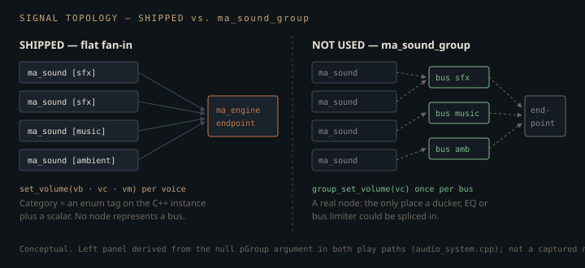

Monograph · Tree · ← Module hub · AudioSystem facade
audio
AudioSystem facade
Init, categories, handles, 3D, volumes.
The buses that are not buses
`SoundCategory` reads like a mixer strip — SFX, Music, Ambient, each with its own volume, each stoppable and pausable as a group. miniaudio ships a first-class object for exactly that shape: `ma_sound_group`, a node you splice between voices and the engine endpoint. OHAO does not use it. Both play paths pass a null group pointer, which attaches every voice straight to the engine's endpoint:
m_engine.get(), pathStr.c_str(), flags, nullptr, nullptr, sound.get());ohao/audio/audio_system.cpp:77A category is therefore two ordinary C++ things: an enum tag stored on the owning `SoundInstance`, and a scalar folded into that one voice's gain. Nothing in the audio graph corresponds to "music". Changing a category volume is a linear walk over every live sound, re-multiplying the ones whose tag matches:
if (instance.category == category) {ohao/audio/audio_system.cpp:219
`ma_sound_group` would make `setCategoryVolume` O(1) instead of O(active sounds), and — the part that matters more — would give the mix a real insertion point, because miniaudio can splice effect nodes into a node graph but not into a float. The flat design buys a facade with no hidden state: `stopCategory` is a `std::erase_if` over a map, not a graph edit, and the entire mixer is four floats you can print — one master and a three-element category array. The price is that ducking music under dialogue, or putting a limiter on the SFX bus, is not a feature you add later — it is a topology change.
Three scalars, and no limiter
Each voice's gain is a bare three-way product, computed in C++ and pushed down with a single `ma_sound_set_volume`:
instance.baseVolume * m_categoryVolumes[static_cast<std::size_t>(catIdx)] * m_masterVolume;ohao/audio/audio_system.cpp:300$v_b$ is the per-sound base volume passed to `playSound`, $v_c$ the category scalar, $v_m$ the master. `updateSoundVolume` clamps nothing itself; the clamp sits at the entry points, where `clampVolume` applies $\mathrm{cl}(x) = \min(\max(x,0),1)$ to whatever the caller supplies — in both play paths, in `setSoundVolume`, in `setCategoryVolume` and in `setMasterVolume`. Every factor is therefore already in $[0,1]$ before the multiply, and so is the product: a voice can be attenuated, never amplified. That ceiling is per voice, not per mix — the endpoint sums N voices with nothing after it, so a dozen simultaneous unity-gain effects clip the output while every individual gain is legally "at most 1".
The clamp is the only shaping in the chain, and it is linear amplitude rather than perceptual: a master slider at 0.5 is −6 dB, which reads as "somewhat quieter", not "half as loud". A UI wired straight to this value is top-heavy, and no curve is applied anywhere to fix that.
Spatialisation is opt-in because the default is on
miniaudio enables spatialisation on every `ma_sound` by default, so the non-positional path has to switch it back off — otherwise a UI click would be panned and attenuated according to wherever the listener happens to be standing:
ma_sound_set_spatialization_enabled(sound.get(), MA_FALSE);ohao/audio/audio_system.cpp:83That line is load-bearing, not defensive. The positional path sets the same flag to `MA_TRUE` — already the default — and then writes the distance model out longhand:
ma_sound_set_min_distance(sound.get(), 1.0f);ohao/audio/audio_system.cpp:125ma_sound_set_max_distance(sound.get(), 50.0f);ohao/audio/audio_system.cpp:126ma_sound_set_attenuation_model(sound.get(), ma_attenuation_model_inverse);ohao/audio/audio_system.cpp:127Only one of those three calls changes miniaudio's behaviour. `ma_spatializer_config_init` already selects the inverse model, already sets a minimum distance of 1, and already sets rolloff to 1 — the last of which the facade never touches. The library's default *maximum* distance is `MA_FLT_MAX`, so 50 is the one constant the facade actually owns; the other two are defaults written down, which is worth something as a pin against a library upgrade but is not a design decision.
miniaudio's inverse model (OpenAL's `AL_INVERSE_DISTANCE_CLAMPED`) computes a scalar gain from the listener-to-source distance $d$:
With $d_{\min}=1$ and $d_{\max}=50$ world units as set above and rolloff $\rho=1$ inherited, the expression collapses to $g(d) = 1/\mathrm{clamp}(d,1,50)$: flat unity inside one unit, honest inverse-distance out to fifty, then a hard floor of $1/50 = 0.02$, roughly −34 dB.
The floor is the sharp edge. A looping ambient a kilometre away is neither culled nor silenced; it is held at 2% gain, still decoded, still mixed, forever. Culling by distance would be the caller's job.
Where the mutex stops
`m_mutex` guards `m_sounds` and nothing else. That is a narrower promise than the class's shape implies, and it shows in four places.
The handle counter is bumped outside the lock — both play paths call `nextHandle()` before entering the critical section, and the counter is a plain non-atomic read-modify-write:
return m_nextHandle++;ohao/audio/audio_system.cpp:305Two threads playing concurrently can be issued the same handle, and the second insertion then destroys the first sound through the map.
The mixer scalars are written outside the lock. `setMasterVolume` stores the clamped float first and only then locks to walk the map; `setCategoryVolume` has the same shape:
m_masterVolume = clampVolume(volume);ohao/audio/audio_system.cpp:264The reads are not symmetric, and the asymmetry does not save it. `updateSoundVolume` reads both scalars with the mutex held — all five of its call sites are inside locked regions — but a reader holding a lock the writer never takes is still racing. The two public getters do not even have that: `getMasterVolume` is an inline return in the header, and `getCategoryVolume` is an out-of-line read behind a category-validity branch, neither of them locked:
return m_categoryVolumes[static_cast<std::size_t>(soundCategoryIndex(category))];ohao/audio/audio_system.cpp:227Torn float reads are not a real hazard on the targets OHAO builds for, but these are races and a sanitiser will say so.
The third one bites. Both play paths capture a raw `ma_sound*`, move the owning instance into the map, release the lock, and only then start the sound. Nothing in the code says why the start is outside the critical section, and there is little to buy: `ma_sound_start` on a freshly initialised sound takes no lock of its own — it reads a few atomics and exchanges the node's state. What the ordering costs is a window in which a raw pointer to a map-owned object is live while the map is unlocked, and `stopAll` needs no handle to run:
void AudioSystem::stopAll() {ohao/audio/audio_system.cpp:272and clearing the map runs `MaSoundDeleter`, which uninitialises and frees the object that raw pointer still refers to:
ma_sound_uninit(sound);ohao/audio/audio_system.cpp:20A `stopAll` or `stopCategory` landing in that window starts a freed `ma_sound`. `stopSound` cannot reach it — the handle has not been returned yet — but the category-wide and global stops can, and the mutex exists precisely to promise they cannot.
The fourth is the widest, and it is not a window but a whole function. `shutdown()` takes no lock at all: it clears `m_sounds`, destroys the engine and clears `m_initialized`, and the destructor calls it.
m_engine.reset(); // MaEngineDeleter uninits the engineohao/audio/audio_system.cpp:54A `playSound`, `update` or `stopAll` running concurrently with teardown is an unguarded mutation of exactly the container the mutex is supposed to own, racing a thread that never takes the mutex at all. `m_initialized` is the same story one size down: written there, read without the lock by `update()`'s early-out and by the inline `isInitialized()`. Single-threaded teardown is the only regime in which this is safe, and nothing in the class enforces it.
There is no audio graph here beyond a flat fan-in to one endpoint. Every "bus" behaviour — category volume, category stop, master volume — is C++ iterating a map and calling `ma_sound_set_volume` per voice. The mutex covers that map while it is being walked; it does not cover the writes to the mixer scalars, the handle counter, or `shutdown()`.
One translation unit pays for miniaudio
The header forward-declares miniaudio's two types as incomplete structs:
struct ma_engine;ohao/audio/audio_system.hpp:26and owns them through `std::unique_ptr` with stateless custom deleters whose `operator()` is declared in the header and defined in the `.cpp`, where the types are complete. A `unique_ptr` with a custom deleter never needs the pointee to be complete — it only needs to call the deleter — so no translation unit that merely uses `AudioSystem` pays for miniaudio's single-header build. `miniaudio.h` is included in exactly one file in the tree, and that file is the one that asks for the implementation to be emitted:
#define MINIAUDIO_IMPLEMENTATIONohao/audio/audio_system.cpp:1The library semantics this page leans on — default-on spatialisation, the spatializer's default model and distances, non-rewinding stop — belong to a particular version, and the fetch names one rather than a moving ref:
URL https://github.com/mackron/miniaudio/archive/refs/tags/0.11.21.zipexternal/cmake/miniaudio.cmake:12That pin only binds on the branch that fetches. The module looks first for a `miniaudio.h` already sitting in the build tree and, finding one, uses it with no version check:
message(STATUS "miniaudio: Using pre-fetched header at ${MINIAUDIO_LOCAL_DIR}")external/cmake/miniaudio.cmake:6So a stale or hand-dropped header in `build/_deps` is consumed silently, and the URL above documents what a clean configure would download, not necessarily what compiled.
The reaper, and who calls it
Finished one-shots are not freed when they end; they are freed when someone asks. `update()` is the only reaper, and its predicate is "not looping and at end":
&& ma_sound_at_end(instance.sound.get())) {ohao/audio/audio_system.cpp:289Skip it and every fired one-shot stays in the map, attached to the endpoint, being mixed as silence. Which leads to the honest part: nothing in the engine calls it. `ohao_audio` is on the link line of every example —
-Wl,--start-group ohao_renderer ohao_gpu_vulkan ohao_scene ohao_physics ohao_audio ohao_core -Wl,--end-groupexamples/CMakeLists.txt:12— but no example, renderer, or scene source references `AudioSystem` at all. The only code that drives the facade is its own test suite, which pins the handle contract — a missing file returns `INVALID_SOUND_HANDLE` rather than throwing — and skips every device-dependent case when `initialize()` fails, so machines with no audio device still pass:
bool testPlayInvalidPath() {tests/audio/audio_system_tests.cpp:202The suite does call `update()` and `setListenerPosition` — but never with a sound alive:
// Calling update with no active sounds should be finetests/audio/audio_system_tests.cpp:296The one `playSound` in the file points at a path that does not exist, so no test ever creates a voice. The reaper's predicate never runs, the gain product is never applied to a real `ma_sound`, and distance attenuation — the thing the 50-unit floor is about — is not touched at all. This page describes a facade that is built, linked and tested, and not yet wired to a frame.
Contracts
- `m_sounds` must be cleared before `m_engine` is released — each sound holds a reference-counted handle on engine-owned decoded data, and `MaEngineDeleter` runs `ma_engine_uninit` unconditionally. `shutdown()` does it in that order and the destructor calls `shutdown()`; swapping those two lines is a use-after-free at exit.
m_sounds.clear(); // MaSoundDeleter uninits each soundohao/audio/audio_system.cpp:53- `m_categoryVolumes` is a hard-coded `std::array<float, 3>`, not sized from `SoundCategory::Count`. Add a fourth category, teach `isValidSoundCategory` to accept it, and `setCategoryVolume` writes out of bounds — silently, because the index comes from the enum and nothing checks it against the array.
std::array<float, 3> m_categoryVolumes{{1.0f, 1.0f, 1.0f}}; // SFX, Music, Ambientohao/audio/audio_system.hpp:158- `pauseSound` is `ma_sound_stop`, which in miniaudio does not rewind, so `resumeSound`'s `ma_sound_start` continues from the cursor. `stopSound` is different in kind: it erases the instance, so the handle dies with the sound.
- Handles are never recycled and 0 is reserved, so a stale handle is a lookup miss and every setter no-ops. "Reaped", "stopped" and "never existed" are indistinguishable from outside — `isPlaying` returns false for all three, and for a paused sound as well.
- One listener, index 0, fixed at engine init. Split-screen would need `listenerCount` raised and a pinned listener index per sound; neither exists.
config.listenerCount = 1;ohao/audio/audio_system.cpp:36Source files
ohao/audio/audio_system.cppohao/audio/audio_system.hppexternal/cmake/miniaudio.cmakeexamples/CMakeLists.txttests/audio/audio_system_tests.cppohao/audio/audio_module.hppParent hub for the full pipeline narrative; this page is the file-level design unit. Sitemap · hover glossary terms anywhere.